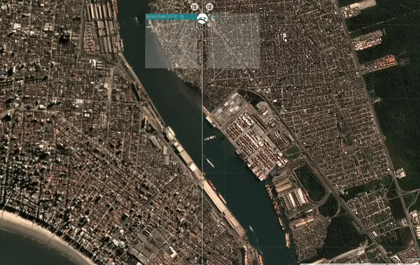

Detecção de alterações por sensoriamento remoto
INTELIGÊNCIA

A plataforma permite sobrepor imagens de satélite captadas em datas distintas de uma mesma área portuária, evidenciando o que mudou no intervalo e apoiando a fiscalização à distância.
Novas construções
Edificações, galpões e estruturas erguidas entre as duas datas.
Movimentações
Mudanças em pátios, cargas e disposição de equipamentos.
Ocupações de área
Avanços sobre faixas e espaços não previstos no porto.
Trilha Técnica da Fiscalização · SFC / GPF — ANTAQ
43 / 61